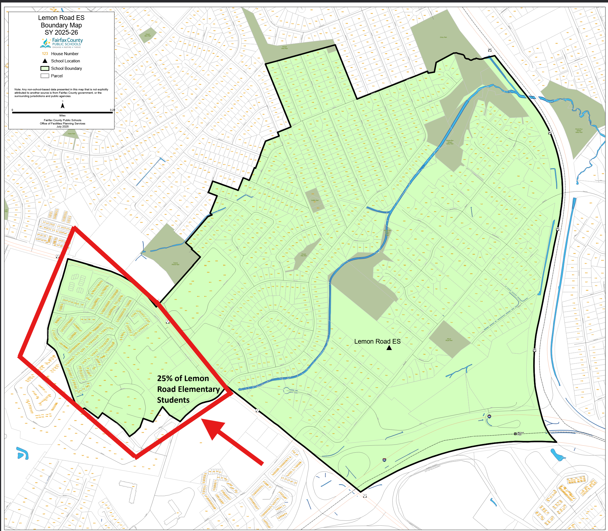

Keep our neighborhood at Lemon Road ES
We support Scenario 4 for Lemon Road Elementary School. A community petition to remove 25% of the Lemon Road students has been circulating and we are here to voice our opposition to removing our kids from their school. We’re asking FCPS to prioritize proximity, minimal change, and operational feasibility.
2‑Minute Action Plan
1) Add your name
Every signature helps show broad support to keep our neighborhood at Lemon Road ES.
2) Send meeting feedback
Submit unique, specific comments so they aren’t de‑duplicated as spam.
Key Talking Points
1. Strong Community Connections
- Our families are deeply woven into the Lemon Road community — from PTA and classroom volunteers to student leaders and after‑school programs.
- Lemon Road fosters meaningful relationships across neighborhoods; our children’s friendships and cohorts are firmly established here.
- Every student community within Lemon Road deserves equal consideration and stability; removing our neighborhood would disrupt about a quarter of the school’s student body.
2. Maintaining Stability & Avoiding Unnecessary Disruptions
- Scenario 4 presents no changes to Lemon Road’s existing boundaries — a solution the broader community supports.
- A last‑minute rezoning would upend a year‑long process and create avoidable instability for students, families, and staff.
- Moving our neighborhood would reduce Lemon Road’s enrollment below 80%, risking cuts to programs, staffing, and resources.
- Families would face logistical challenges with Freedom Hill’s later start time (9:20 a.m. vs. 8:15 a.m.) and limited before/after‑care availability.
3. Cohort Continuity & Academic Consistency
- Students from our neighborhood progress through the same AAP and secondary pathways as their peers, preserving academic and social continuity.
- Rezoning would fragment pathways and trigger unnecessary transfers, particularly for AAP‑eligible students who would travel significantly farther (e.g., Westbriar is ~2.5× farther than Lemon Road).
4. Capacity & Planning Data Do Not Support Boundary Changes
- FCPS projections show overall declining enrollment through 2030 due to birth rates and housing trends.
- Scenario 4 already relieves Kilmer’s overcrowding by resolving other split‑feeder issues; there’s no justification for an extra, unnecessary elementary move.
- Freedom Hill’s capacity is not identified as a current FCPS priority for adjustment.
5. Safety & Transportation
- No elementary students in our neighborhoods cross Route 7 on foot; all are bused or driven.
- Rerouting buses would add costs and logistical burdens amid existing driver shortages.
- Major roads border all nearby schools (Route 7, Great Falls, Gallows, Chain Bridge, etc.); singling out one neighborhood as a safety concern is inconsistent.
6. Socioeconomic & Policy Considerations
- Our neighborhood contributes to the socioeconomic diversity that enriches Lemon Road’s learning environment.
- Removing townhomes and apartments while retaining predominantly higher‑priced single‑family homes would make both Lemon Road and Freedom Hill less balanced, contrary to FCPS equity goals.
- Lemon Road’s mission, centered on the “Other People Matter Mindset,” thrives on its diversity and inclusivity.
7. Process Integrity
- The Pimmit Hills proposal reflects only a small subset of that community and was introduced late without collaboration or transparency.
- We value our long‑standing friendships within the Lemon Road community and are disappointed that disruptive recommendations advanced without discussion.
- We urge FCPS and the School Board to maintain stability, equity, and community continuity by keeping our neighborhood at Lemon Road ES.
Key Dates & Next Steps
| Date | Event | Details |
|---|---|---|
| Oct 2025 | Community meetings | Presentation + Q&A; submit Boundary Explorer comments the same day. |
| Nov–Dec 2025 | Advisory committee review | Scenario refinements; staff compile comments. |
| Early 2026 | Board work sessions / decisions | Opportunities for public comment at Board meetings. |
*Timeline is illustrative. Replace with official dates as FCPS posts updates.
FAQ
Isn’t cleaning up a split‑feeder always good?
No. FCPS policy also prioritizes proximity and minimal change. Exporting a large, proximate cohort just to tidy a map causes unnecessary disruption.
Why not just move us to Freedom Hill?
The scale (~650 households) would likely exceed available seats and require multi‑school splits or temporary classrooms—adding complexity and cost.
How can I help?
Sign and share the petition; post a unique comment in the Boundary Explorer; tell a neighbor; attend meetings; and email staff/Board with your story.
Media / Contact
Email jwilksftw@gmail.com for quotes, background, or data tables.
Map of proposed change

If the image does not load, ensure boundary.png is uploaded to the same folder as index.html (or update the path).